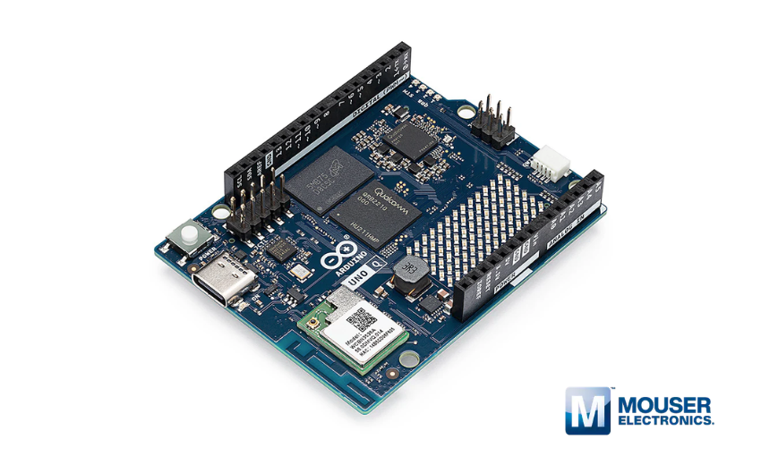
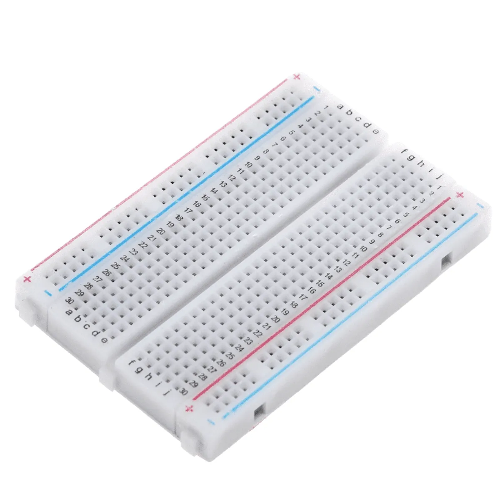
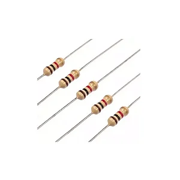
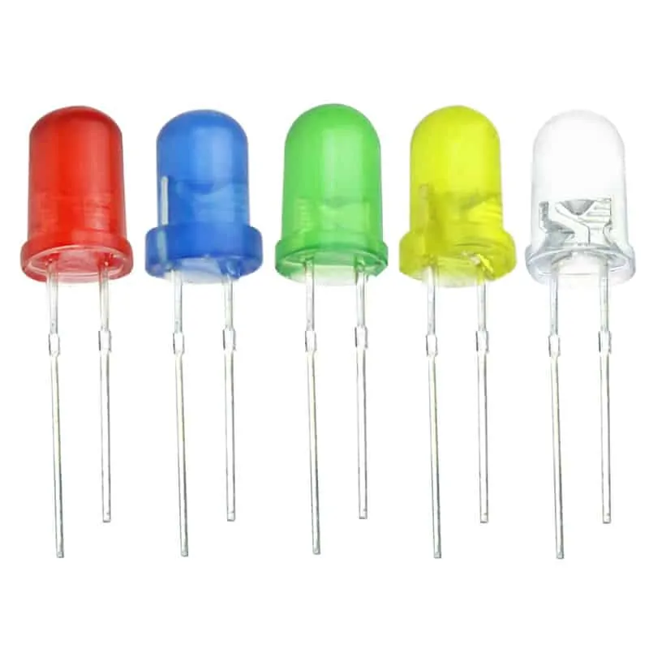
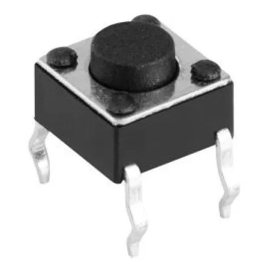
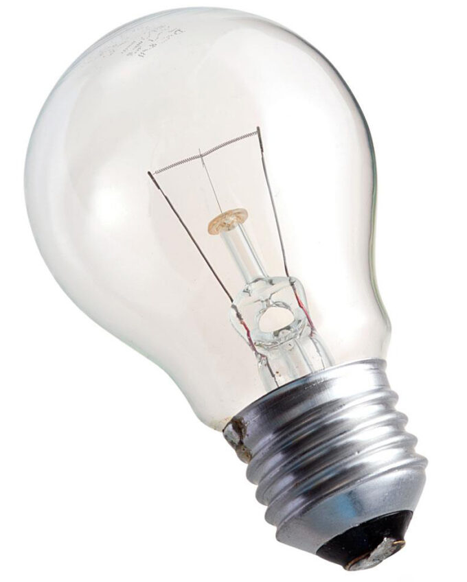
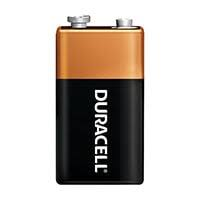
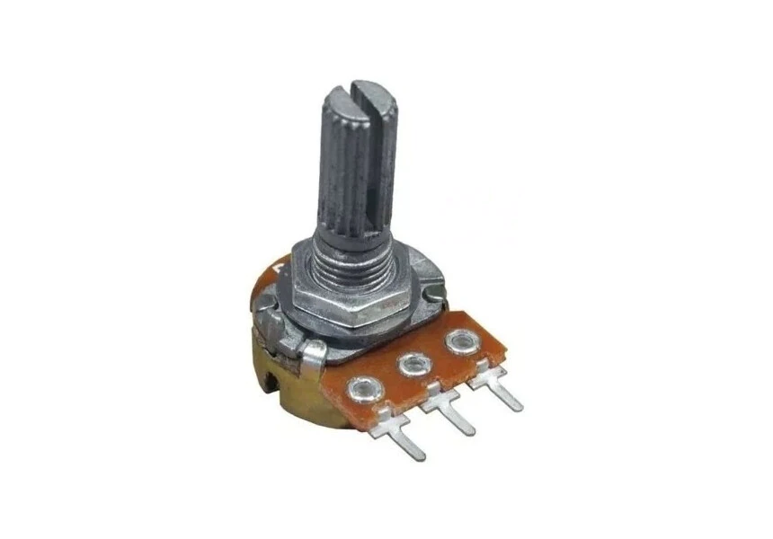
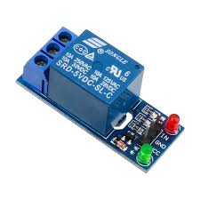
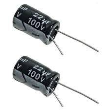

| Peças | Função |
|---|---|
| Arduino  |
Arduino é uma plataforma de prototipagem eletrônica de código aberto (open-source) baseada em hardware e software fáceis de usar. Consiste em uma placa com um microcontrolador capaz de ler entradas (sensores, botões) e acionar saídas (motores, LEDs), servindo como "cérebro" para projetos de robótica, automação e IoT. |
| Protoboard (Placa de Ensaio)  |
Uma protoboard (ou placa de ensaio) é uma ferramenta reutilizável usada para montar e testar circuitos eletrônicos sem precisar de solda. Ela permite conectar componentes como resistores, LEDs e sensores através de furos, facilitando a prototipagem rápida e segura de projetos, sendo amplamente usada por estudantes e engenheiros antes da produção final. |
| Resistores  |
Um resistor é um componente eletrônico passivo cuja principal função é limitar o fluxo de corrente elétrica em um circuito, oferecendo resistência à passagem dos elétrons. Ele transforma energia elétrica em calor (efeito Joule) e é essencial para proteger componentes sensíveis e ajustar os níveis de tensão e corrente. |
| Jumpers |
Jumpers são fios condutores com pontas rígidas usados para conectar componentes eletrônicos em protoboards ou circuitos sem necessidade de solda. Essenciais para prototipagem rápida e testes, variam em tipos (macho/macho, macho/fêmea) e cores, facilitando a organização de projetos como Arduino e Raspberry Pi. |
| Led  |
LED (Diodo Emissor de Luz) é uma tecnologia de iluminação de estado sólido altamente eficiente, que converte eletricidade em luz através de semicondutores, consumindo menos energia e durando mais que lâmpadas tradicionais. Utilizados em lâmpadas, fitas, refletores e telas, oferecem alta durabilidade (até 25.000h) e redução de energia de até 82%. |
| Botão  |
Um botão é um mecanismo de controle, físico ou digital, projetado para acionar uma ação, função ou interrupção ao ser pressionado, clicado ou girado. Eles servem como interface entre o usuário e um sistema, sendo usados para prender roupas, ligar aparelhos ou interagir com softwares. |
| Lâmpadas  |
Uma lâmpada é um dispositivo elétrico projetado para transformar energia elétrica em luz (energia luminosa), servindo como fonte de iluminação artificial. Elas utilizam tecnologias como filamentos incandescentes, gases fluorescentes ou diodos (LED) para emitir luz e são componentes essenciais em residências e indústrias. |
| Bateria  |
Uma bateria é um dispositivo que armazena energia na forma química e a converte em energia elétrica para alimentar aparelhos. Ela é composta por uma ou mais células eletroquímicas (pilhas) que geram corrente através de reações de oxirredução, permitindo o funcionamento de eletrônicos, veículos e outros dispositivos sem conexão constante à tomada. |
| Potenciômetro  |
Um potenciômetro é um componente eletrônico de três terminais que atua como um resistor variável, permitindo ajustar manualmente a resistência elétrica e, consequentemente, a tensão em um circuito. Comumente usado para controlar volume, brilho ou calibração, ele funciona movendo um cursor sobre uma trilha resistiva, variando de \(0\Omega\) até seu valor máximo. |
| Sensor ultrassônico |
O sensor ultrassônico HC-SR04 é um módulo popular para medir distâncias (2cm a 4m) com Arduino, utilizando emissão de som (40 kHz) e cálculo de tempo de eco. Ele possui 4 pinos (VCC-5V, GND, Trig, Echo) e calcula a distância baseada no tempo que o pino Echo permanece alto após o Trigger enviar o pulso. |
| Relé  |
Um relé é uma chave eletromecânica ou eletrônica que utiliza um sinal de baixa potência para controlar circuitos de alta potência, agindo como um interruptor automático. Ele funciona energizando uma bobina que cria um campo magnético, movendo contatos (normalmente aberto ou fechado) para ligar/desligar cargas como motores e luzes |
| LDR |
O LDR (Light Dependent Resistor ou Resistor Dependente de Luz) é um componente eletrônico passivo cuja resistência elétrica varia de acordo com a intensidade da luz incidente sobre ele. É um fotorresistor que diminui sua resistência com o aumento da luminosidade, sendo amplamente usado em sensores, iluminação automática e robótica com Arduino. |
| Capacitor  |
O capacitor (ou condensador) é um componente eletrônico passivo que armazena energia elétrica temporariamente em um campo elétrico. Composto por duas placas condutoras separadas por um material isolante (dielétrico), ele libera essa carga rapidamente quando necessário. É amplamente utilizado para filtragem de sinais, acoplamento/desacoplamento e correção de fator de potência. |
| Lei de ohm |
A Lei de Ohm estabelece a relação fundamental entre tensão (V), corrente (I) e resistência (R) em um circuito elétrico. Ela define que a corrente elétrica é diretamente proporcional à tensão e inversamente proporcional à resistência, sendo expressa pela fórmula principal \(V = R \times I\). |
| Feito por: Manu e Luca. | Profº Wagner e Andreia. Sistemas Embarcados. |